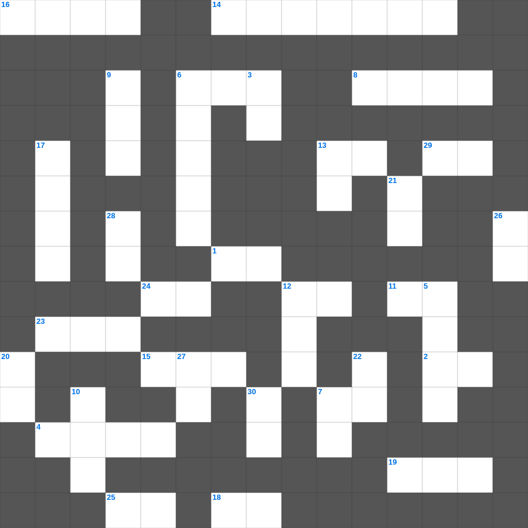

빌립보서 마스터 50
📌 서비스 정의
십자가로세로는 교회 주보와 주일학교에서 사용할 수 있는 성경 기반 가로세로 퍼즐 서비스입니다. 성경 인물, 사건, 핵심 구절을 바탕으로 제작되었습니다. 온라인 풀이 및 인쇄 기능을 제공합니다.
📖 빌립보서란?
빌립보서는 감옥에 갇힌 바울이 빌립보 교회에 보낸 서신으로, 어떤 상황에서도 그리스도 안에서 누리는 참된 기쁨을 강조합니다.
📚 빌립보서의 주요 사건·주제
그리스도의 겸손과 자기 비움(빌립보서 2장) · 복음을 위한 바울의 삶 · 그리스도를 아는 지식의 가치 · 참된 기쁨에 대한 권면 · 어떤 형편에든 자족함
빌립보서의 말씀을 퀴즈로 배우는 빌립보서 성경 퍼즐입니다. 가로 힌트와 세로 힌트를 보고 35개의 단어를 맞춰보세요. 인쇄도 가능하고 정답 확인도 바로 되니 소그룹 모임이나 가정 예배 시간에도 활용하실 수 있습니다.

📝 가로 힌트
1. 예후는 무엇을 모는 것이 미친 듯이 빠르기로 유명했나
2. 참다 이 말이여 우리가 주와 함께 죽었으면 또한 함께 이것이요
4. 솔로몬이 성전을 건축하기 시작한 산
6. 하나님이 형통과 곤고를 병행하게 하사 사람이 그의 이것을 능히 헤아려 알지 못하게 하셨느니라
7. 내가 이것의 입에서 구조되었느니라
8. 아모스서의 핵심 주제
11. 사람이 교만하면 낮아지게 되겠고 마음이 겸손하면 이것을 얻으리라
12. 이것을 따르는 사람들이 있어 믿음에서 벗어났느니라 은혜가 너희와 함께 있을지어다
13. 너희는 많은 환난 가운데서 이것의 기쁨으로 말씀을 받아 우리와 주를 본받은 자가 되었으니
14. 개가 그 토한 것을 도로 먹는 것 같이 미련한 자는 그 미련한 것을 이것 하느니라
15. 안식 후 첫날 새벽에 막달라 마리아와 다른 마리아가 무덤에 갔을 때 주의 이것이 하늘로부터 내려와 돌을 굴려 내고
16. 강 좌우에 있어 열두 가지 열매를 맺는 나무
18. 느헤미야가 방비할 때 백성들을 세운 기준 '그들의 이것을 따라'
19. 예루살렘 교회 의장으로 예루살렘 회의를 주재한 인물
23. 선을 행하는 자는 하나님께 속하고 악을 행하는 자는 하나님을 이것하지 못하였느니라
24. 기록된 바 나무에 달린 자마다 이것 아래에 있는 자라 하였음이라
25. 요한삼서 1장 4절: 내가 내 자녀들이 어디 안에서 행한다 함을 듣는 것보다 더 큰 즐거움이 없도다
27. 선을 행하고 선한 이것을 많이 하고 나누어 주기를 좋아하며 너그러운 자가 되게 하라
29. 무화과나무의 이것이 연하여지고 잎사귀를 내면 여름이 가까운 줄을 아나니
📝 세로 힌트
3. 에스더가 왕후로 뽑히기 전 몸을 정결하게 한 기간
5. 귀환 후 일곱째 달에 이스라엘 백성이 모인 곳
6. 우리가 다 하나님의 아들을 믿는 것과 아는 일에 하나가 되어 온전한 사람을 이루어 그리스도의 이것이 충만한 데까지 이르리니
7. 바울이 쇠사슬에 매인 이것이 된 이유는 복음의 비밀을 담대히 알리게 하려 함이라
9. 사도행전의 마지막 단어: 하나님의 나라를 전파하며... 거침없이 이것 하더라
10. 라합이 살던 성읍의 이름
12. 모세가 바로 앞에서 던져 뱀이 되게 한 것
13. 레위기 19장의 별명 '이것 법전'
17. 에스라가 저녁 제사를 드릴 때 무릎을 꿇고 한 것
20. 이것이 장래에 자기를 위하여 좋은 터를 쌓아 참된 생명을 취하는 것이니라
21. 나의 하나님이 그리스도 예수 안에서 영광 가운데 그 풍성한 대로 너희 모든 쓸 것을 이것시리라
22. 나는 선한 이것이라 선한 이것은 양들을 위하여 목숨을 버리거니와
26. 바울이 매임으로 말미암아 형제 중 다수가 주 안에서 이것을 얻어 하나님의 말씀을 더 담대히 전하게 됨
27. 때가 이르리니 사람이 바른 교훈을 받지 아니하며 귀가 가려워서 자기의 이것을 따를 스승을 많이 두고
28. 사람들이 한 이것병 환자를 네 사람에게 메워 가지고 예수께로 올새
30. 몸이 하나요 성령도 한 분이시니 이와 같이 너희가 부르심의 한 이것 안에서 부르심을 받았느니라
🧩 이 퍼즐에서 배우는 내용
이 퍼즐은 빌립보서 마스터 50의 핵심 단어와 개념을 자연스럽게 복습할 수 있도록 구성되었습니다. 주일학교 수업이나 개인 성경공부에서 학습 내용을 점검하는 용도로 바로 활용할 수 있습니다.
🧑🏫 교회 교육 자료 활용
이 퍼즐은 주일학교 교재 추천 자료로 활용할 수 있고, 주일학교 주보에 넣기 좋은 분량으로 구성되어 있습니다. 수업용 주일학교 교안에 활동지로 붙이거나, 예배 후 복습용 주일학교 공과교재로 바로 사용할 수 있습니다.
🏷️ 키워드
빌립보서 성경 퍼즐, 빌립보서, 십자가로세로, 성경퀴즈, 말씀퀴즈, 가로세로퍼즐, 주일학교 교재 추천, 주일학교 주보, 주일학교 교안, 주일학교 공과교재